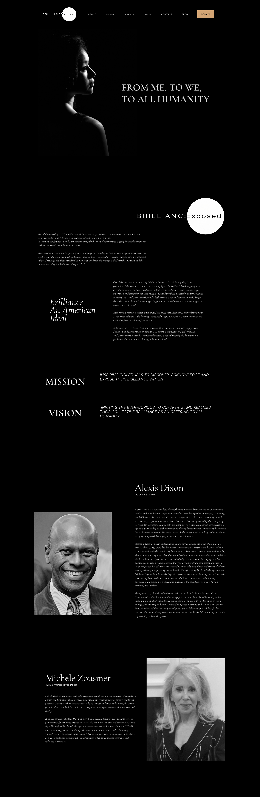
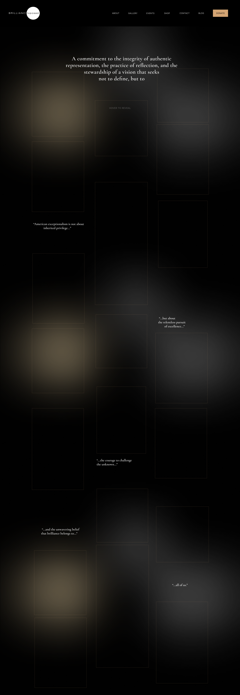
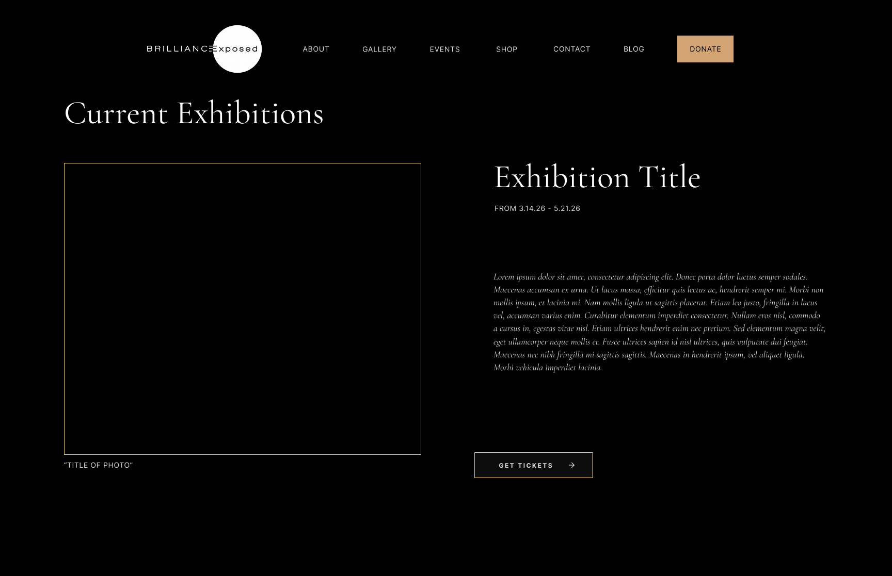
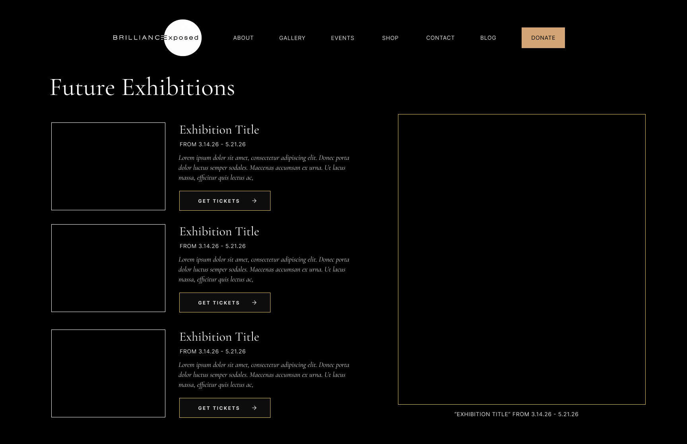
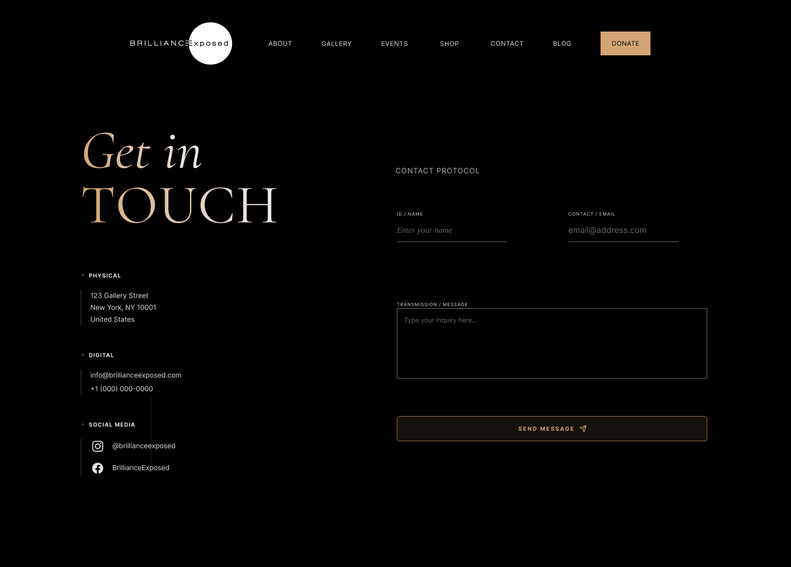

PROBLEM
Brilliance Exposed is a photographic exhibition, nonprofit organization, and movement dedicated to showcasing the brilliance of Black-presenting professionals in STEAM, founded by Alexis Dixon and captured by photographer Michele Zousmer. I worked with Alexis over the course of 20 weeks alongside a group of 7 other designers to design a website that would serve as both a source of information and a digital exhibition.
USABILITY AND ARTISTIC EXPRESSION ARE OFTEN SACRIFICED FOR THE SAKE OF THE OTHER.
Our nonprofit stakeholder wanted a website that had a unique artistic voice while still balancing usability. As artists we often must sacrifice clarity for the sake of expression. This task called for a balancing of the two.
OUR APPROACH
HOW MIGHT WE CREATE IMMERSIVE EXPERIENCES TO ARTISTICALLY REPRESENT BRILLIANCE EXPOSED WHILE MAINTAINING USABILITY?
INITIAL RESEARCH
We performed a competitive analysis of similar organizations: Venice Arts, Unseen Studio, Jimmy Nelson, Utopia Orchestra, and Ashes and Snow. We also performed online research to determine information about things like our audience and our theme.
Similar CapabilitiesWhat do all the companies have in common? |
Apparent DifferencesWhat are the differences between the companies? |
|
|
Our online research covered five topics. For each one, we set a research question, gathered findings from studies and articles, and noted what it meant for the Brilliance Exposed website.
| Topic | What we found |
|---|---|
AudienceWho typically visits photography exhibition websites? |
|
InteractionsHow do people interact with online galleries? |
|
Online vs. In-Person GalleryHow can we leverage the advantages of being online? |
|
Shop / MerchWhy do people buy merch online? |
|
Black & White AestheticHow far should we lean into black and white? |
|
Sources
|
|
OUR DESIGNS
Note: The designs shown here purposefully exclude certain photos due to the exhibition's high profile nature, as it has not been released to the public yet.





USER TESTING
We asked users a plethora of questions while observing as they completed certain tasks.
Negative Feedback
- Unclear Mission statement
- Purpose of the photos in the animation not clear in the beginning
- Font size is too small
Positive Feedback
- Strong sense of branding
- Visually striking and professional feel
- Easy to find functions to practical tasks like buying tickets
CONCLUSIONS
This project highlighted the importance of clear communication between stakeholder and designer. Though our team has reached a point where our designs might be called finished, the website itself is still a work in progress as we continue to refine and eventually help deploy the final product for the nonprofit.